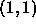

Every plane is characterized by the number of units in x and y
direction. The unit type of a plane can be defined and changed by
 . The position of the planes is determined relative to the
previous plane. The upper left corner of plane no. 1 is always
positioned at the coordinates
. The position of the planes is determined relative to the
previous plane. The upper left corner of plane no. 1 is always
positioned at the coordinates

. Pressing , one can choose between `left', `right' and `below'. FigureEvery plane is associated with a plane number. This number is introduced to address the planes in a clear way. The number is important for the link editor. The user cannot change this number.
In the current implementation the z coordinate is not used by BIGNET. It has been implemented for future use with the 3D visualization component.